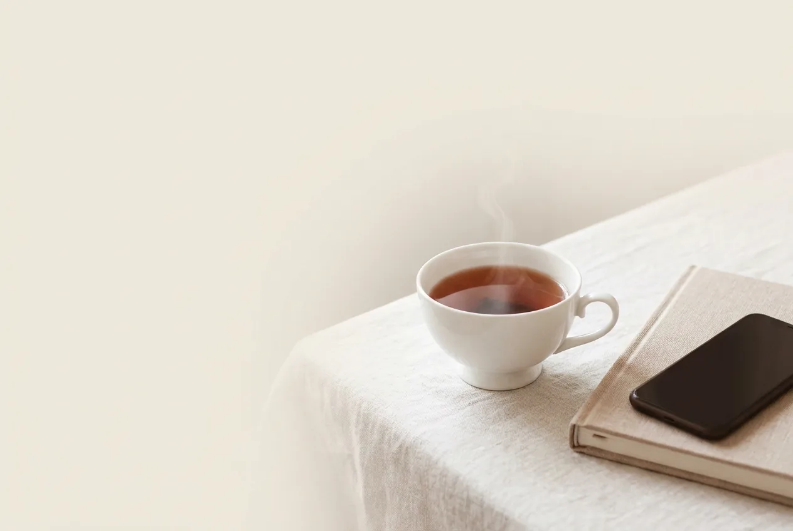
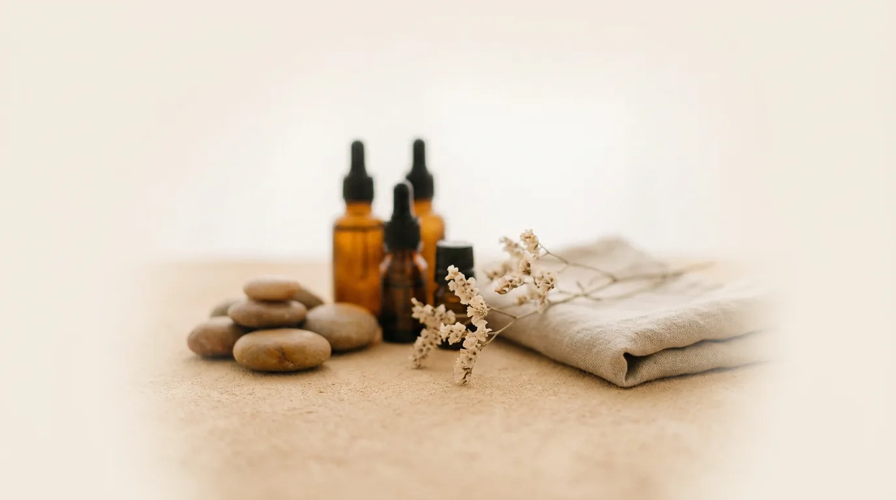
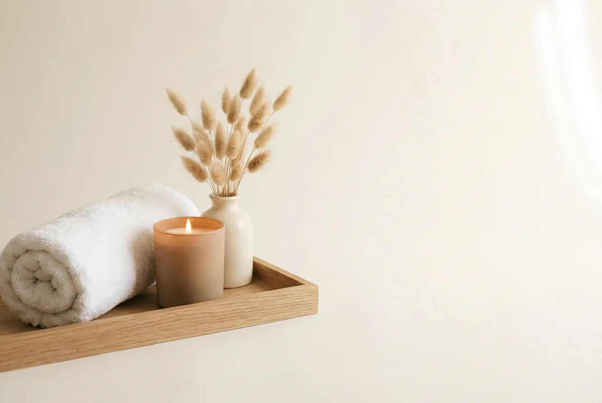

Head Spa
Um convite para desacelerar. Ritual que une massagem terapêutica no couro cabeludo, estímulos sensoriais e tratamento capilar, com água morna na cuba de mármore. Relaxa, alivia a tensão e cuida dos fios.
Head Spa, massagens, estética facial e corporal para mulheres, no Estreito em Florianópolis.
Cada cuidado começa por uma avaliação feita só para você.
Estética Integrativa Funcional: técnica, toque e atenção ao que o seu corpo está pedindo.
Água morna, mãos atentas e um horário que é só seu.
Agendar pelo WhatsApp
Trabalho, casa, família, mensagens que não param. O cuidado com a pele, com o corpo e com a cabeça vai sendo adiado, e o cansaço começa a aparecer no rosto, nos ombros e no sono.
Aqui o horário é reservado para você. Sem pressa, sem protocolo em série, com tempo para parar de verdade.

Olho para a pele, para o corpo e para o momento que você está vivendo. A partir de uma avaliação individual, escolho as técnicas que fazem sentido para você, em vez de repetir o mesmo procedimento para todas.
Um convite para desacelerar. Ritual que une massagem terapêutica no couro cabeludo, estímulos sensoriais e tratamento capilar, com água morna na cuba de mármore. Relaxa, alivia a tensão e cuida dos fios.

O atendimento é exclusivamente feminino.
Sou formada em Estética, tenho pós-graduação em Estética Corporal e Facial e trabalho na área há cerca de 10 anos.
Meu propósito é oferecer cuidados personalizados, unindo conhecimento técnico, beleza e bem-estar, com a atenção aos detalhes que eu gostaria de receber.
“Sou cliente da Jessika há anos e só tenho gratidão pelo carinho e profissionalismo. Ela é extremamente cuidadosa e dedicada. O mais especial é que ela não cuida apenas da nossa estética, mas do nosso bem-estar como um todo. Cada atendimento é um momento incrível, de cuidado, acolhimento e leveza.”
“Excelente profissional! A Jéssika é extremamente caprichosa e atenta aos detalhes. Os serviços que ela oferece são incríveis e o ambiente reflete todo esse cuidado: é lindo e muito bem organizado. Uma experiência impecável do início ao fim.”
“A experiência head spa é um convite ao relaxamento e bem estar. Eu amei a experiência e super indico essa excelente profissional. Parabéns Jessika! Você tem uma energia maravilhosa e entrega muito amor pelo que faz.”
“A Jessica é extremamente atenciosa, me senti cuidada em toda a experiência do SPA. Foi incrível!”
Não. O atendimento é exclusivamente feminino.
É um ritual que une massagem terapêutica no couro cabeludo, estímulos sensoriais e tratamento capilar, com água morna. Promove relaxamento, leveza e equilíbrio, e também cuida dos fios.
Sim. Todo cuidado começa por uma avaliação individual, para eu entender a sua pele, o seu corpo e o seu objetivo antes de indicar qualquer procedimento.
Head Spa, limpeza de pele, microagulhamento, massagem terapêutica, massagem estética, drenagem linfática e massagem relaxante.
Depende da sua pele, do seu corpo e do procedimento. Não trabalho com promessa milagrosa: na avaliação conversamos sobre o que é possível e sobre a frequência indicada para você.
Pelo WhatsApp (48) 98405-7057, onde combinamos o dia e o horário. Se preferir, preencha o formulário no fim da página e eu retorno.
Rua Araci Vaz Callado, 727, Estreito, Florianópolis/SC.
Pelo WhatsApp é mais rápido. Se preferir, deixe seus dados aqui que eu retorno.